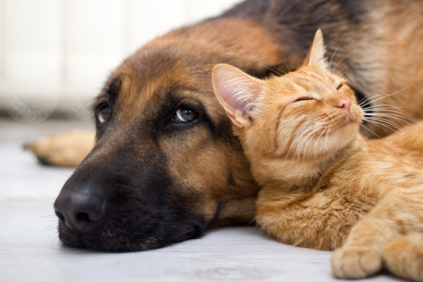
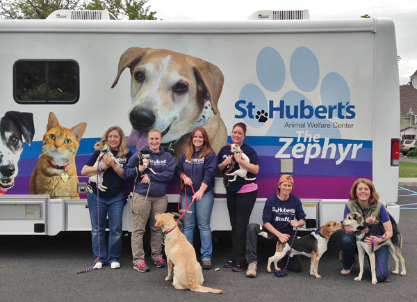

ABOUT US
St. Hubert's Animal Welfare Center is dedicated to the humane treatment of animals. We believe in and provide services that support the human-animal bond and seek to foster an environment in which people respect all living creatures.
COME SEE US
We are open for adoption by appointment only Sunday-Wednesday 1:30-6 pm. Walk-ins are welcome Thursday 3-6 pm and Friday and Saturday 1:30-6 pm (no appointment necessary). Please note all staff, volunteers and visitors must wear a mask. If the pet is at our Madison location, schedule an appointment. If the pet is in a foster home, it will be indicated next to the pet's name. Please contact the foster parent directly using the email found in the pet's profile. Please note that we book appointments two weeks in advance. People sometimes cancel appointments, so if you see a message that all appointments are booked please check back frequently for openings. We look forward to helping you find your new best friend!
ABOUT THE ADOPTION PROCESS
Our professional staff and open, friendly adoption policies make selecting your new family member a pleasant and joyful experience. Adoption counselors look forward to chatting with you about your individual preferences and arranging a “meet and greet” visitation with the many wonderful pets waiting to begin their lives anew. We are here to assist in making a match that will endure and will be mutually satisfying to both pet and human guardian. Dogs and cats available for adoption have been examined, temperament assessed, bathed and groomed, fully vaccinated, dewormed, microchipped, and are spayed/neutered prior to release, including puppies and kittens. All are sent home with new collars, leashes and a supply of the food they are accustomed to eating during their stay with St. Hubert’s. The relationship between adopter and St. Hubert’s doesn’t end once the paperwork is completed. We consider our adopters to be a part of the St. Hubert’s “family” and our staff is available to offer guidance and suggestions, if needed, during the pet’s transition to his or her new home and family. Dog adopters have access to our professional canine behavior counselors and receive a discount at our renowned dog training school. We encourage adopters to be in touch and enjoy receiving updates and photos of our former charges.
